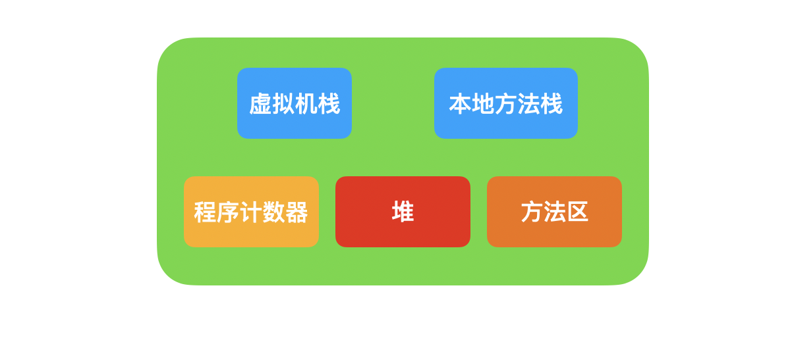

从引用聊一聊 Java 垃圾回收
对象是 Java 世界的一等公民，所有的对象都是引用类型。除了 8 种基本的数据类型之外，其他的都是对象。
JVM 和垃圾回收
在开始讨论引用之前，首先需要了解一下 JVM 和垃圾回收。Java 与 C 语言等不同，C 语言代码经过编译器编译之后，就可以直接在 CPU 上执行，而 Java 不同，Java 语言需要先编译生成字节码文件，再由 JVM 生成可以在 CPU 上运行的代码。
而且 Java 在生成对象时，并不需要手动分配内存，而是由 JVM 自动进行分配，对于不再使用的对象，JVM 会对这些对象占用的内存进行回收，这个过程称之为垃圾回收（Garbage Collection，简称 GC）。
JVM 负责对程序运行时的内存进行管理。为了提升管理效率，JVM 将运行时的内存划分成了不同的区域，总体上的划分如下：

每个线程独占一个虚拟机栈，通过程序计数器记录当前代码执行的位置，本地方法栈与虚拟机栈类似。
程序中创建的大多数对象都在堆中分配内存，然后栈中的变量通过引用来指向堆中的对象，所以堆是各个线程共享的一块内存区域。方法区中则存储 Java 的类型信息、常量、静态变量等等（常量，静态变量也有可能会引用对象）。
栈内的变量通过引用来和堆内的对象建立联系，建立联系的方式有两种：使用句柄或者直接指针。
使用句柄方式如下：
使用直接指针如下：
使用句柄的好处是引用中存储的是稳定的句柄地址，在对象被移动时只会改变句柄中的数据，而不会修改引用中的数据。但是直接指针的速度会更快，在主流的 HotSpot 虚拟机中，使用的就是直接指针。
Java 引用
Java 中的引用类型总共有四种：强引用，软引用，弱引用，虚引用。
强引用就是最普通的对象引用，每当 new 一个对象的时候，都是生成一个强引用。这种引用对垃圾回收免疫，即使发生 OOM，这种对象也不会被回收。
Object o = new Object();
软引用的强度相对弱一些，在发生 OOM 之前，JVM 会尝试去回收这些对象，软引用的实现类是 SoftReference。
Object o = new Object();
SoftReference srf = new SoftReference(o);
弱引用就更弱了，如果碰上了垃圾回收，弱引用的对象肯定会被回收，弱引用的实现类是 WeakReference。
Object o = new Object();
WeakReference wrf = new WeakReference(o);
虚引用无法引用对象，实际只是做一些垃圾清理之后的事情, 虚引用的实现类是 PhantomReference。
Object o = new Object();
ReferenceQueue rq = new ReferenceQueue();
PhantomReference prf = new PhantomReference(o, rq);
上面的各种引用都继承了 Reference 类，Reference 类中有一个 get 方法，如果软引用和弱引用所指向的对象没有被回收，那么使用 get 方法就可以获取原对象的引用。
Object o = new Object();
SoftReference srf = new SoftReference(o);
o = null; // 断开强引用
System.out.println(srf.get()); // java.lang.Object@17579e0f
对软引用手动触发垃圾回收：
Object o = new Object();
SoftReference srf = new SoftReference(o);
o = null;
System.gc(); // 手动触发垃圾回收
System.out.println(srf.get()); // java.lang.Object@17579e0f
由于内存充足，所以软引用指向的对象并没有被回收。对于弱引用来说，情况就不一样：
Object o = new Object();
WeakReference wrf = new WeakReference(o);
o = null; // 断开强引用
System.out.println(wrf.get()); // java.lang.Object@17579e0f
对弱引用手动触发垃圾回收：
Object o = new Object();
WeakReference wrf = new WeakReference(o);
o = null;
System.gc(); // 手动触发垃圾回收
System.out.println(wrf.get()); // null
由上面的代码可知，弱引用一定会被垃圾回收。软引用和弱引用一个经典的应用场景就是作为缓存使用，这两种引用所指向的对象一定会在发生 OOM 之前被回收，所以不会导致内存泄露问题。
虚引用 PhantomReference 的 get 方法会一直返回 null，所以无法通过虚引用获取到对象。虚引用的意义在于提供了一种在对象被回收之后做某些事情的机制，在这里就需要谈到引用队列。
ReferenceQueue 称之为引用队列。如果我们为一个引用指定一个引用队列，那么这个引用所指向的队列在被垃圾回收后，该引用就会被加入到引用队列中。
我们就可以根据引用队列中的引用来判断某个对象是否被回收，或者直接清除引用队列的引用对象，具体的逻辑要看具体的业务场景。
引用和对象的可达性
假设新生成了一个对象：
Object o = new Object();
这个时候 o 是一个强引用，所以这个对象无法被回收。
o = null;
这样一来，这个变量就不再指向这个对象了，假设也没有其他类型的引用来指向这个对象，那么这个对象就称之为不可达，就可以被回收了。
Java 中使用可达性分析来判断对象是否要被回收。可达性的出发点是一些被称之为 GC Roots 的根对象，以下的对象可以作为 GC Roots:
- 栈中引用的对象
- 方法区中静态属性引用的对象
- 方法区中常量引用的对象
- JVM 内部的引用，比如基本数据类型对应的 Class 对象
判断一个对象是否存活其实就是通过引用的类型来进行判断，对于弱引用和虚引用来说，基本就可以认为是不可达了，在下次垃圾回收时就会被回收，而对于强引用，毫无疑问，肯定是可达的。
最难处理的就是软引用。软引用在 JVM 中并没有明确把软引用判断为可达还是不可达，而是会根据当前系统的状态进行判断，如果当前系统内存充足，那么该对象就会被判断为可达，如果系统内存不足，那么该对象就会倾向被回收。
文 / Rayjun